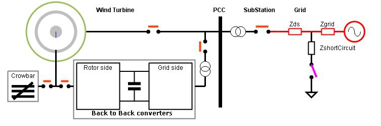

La capacidad de soportar el comportamiento especificado en los Grid Codes, determina las características de los convertidores en el Back-to-Back y también los algoritmos de control del Tren de Potencia. Esto último ocurre porque cuando se produce una bajada de tensión muy rápida, la potencia eléctrica "sigue" a la tensión (es decir, baja).Sin embargo, la potencia mecánica que recibe el Tren de Potencia se mantiene constante, ya que esta depende del viento existente (que podemos suponer que no cambia) y del Pitch de las palas (que no cambian tampoco porque el mecanismo de control tiene un tiempo de respuesta muy lento comparado con la duración de estas bajadas de tensión). El resultado es que el equilibrio que existía
(Potencia Mecánica de entrada = Potencia Eléctrica entregada a la Red + Pérdidas varias)
se rompe y aparece una potencia mecánica "disponible" cuyo efecto es la aceleración del Tren de Potencia.
Esta aceleración se ha de controlar ya que las rpms del Tren de Potencia tienen un límite superior (punto E en Implicaciones para el Tren de Potencia ), no muy lejano del punto de funcionamiento en producción (punto D en la misma figura). Si las rpms del Tren de Potencia llegan a superar el punto E, el Controlador lanza un proceso de parada de prioridad alta (es decir, haciendo uso del freno hidráulico) lo cual es considerado una avería en sí mismo.
Por otro lado si necesitamos que las condiciones de producción "vuelvan" inmediatamente después que se recupere la tensión de la Red, necesitamos que las rpms del Tren de Potencia se mantengan en su valor inicial durante el transitorio.
Un mecanismo común en los DFIGs consiste en utilizar una carga resistiva que se conecta para disipar esta potencia mecánica durante el transitorio. Se le conoce como "CrowBar" en inglés y se suele situar en el circuito del Rotor, tal como muestra la siguiente figura.

Este CrowBar se conecta al Rotor con un conmutador rápido: existen versiones en los que este conmutador está realizado mediante Tiristores (más económicos) y en otros mediante IGBTs. Los distintos interruptores de la figura cambian durante la caída momentánea de tensión, para adaptarse a los requerimientos impuestos por el Grid Code.
Los conceptos básicos para el análisis de este tipo de configuración son los siguientes:
En el sinóptico Armario eléctrico se puede apreciar el tamaño relativo de un Crowbar. En la figura siguiente se pueden ver varios esquemas para su implementación. Las más comunes son las de rotor.

En el caso a) la desconexión es difícil, lo que complica el algoritmo de control y limita los casos de aplicabilidad. En el caso b) es posible conectar las resistencias del Crowbar en cualquier momento del ciclo, lo que amplia el grado de controlabilidad de esta unidad.
El caso c) es similar al a) pero situando las resistancias de disipación en la conexión del estator: en este caso existe una pérdida continua durante situaciones normales de producción, es las que los tiristores se mantienen en conducción, de forma que las resistencias quedan "cortocircuitadas"; cuando se necesita activar la disipación en las resistencia se desexcitan los tiritores. Esta solución es muy poco usada.